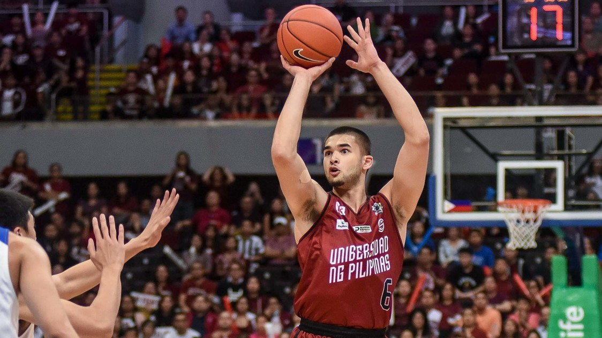

| App | ADMISSION: Welcome! We are so excited that you are interested in finding out more information about University of Portland. University of Portland prepares you for a successful and meaningful career in one of our academic programs. UP graduates are creative, effective leaders and ethical decision makers sought by the nation's top companies and graduate schools.
UP is known as one of the top ten universities in the West, ranked second in the 2021 US News and World Report rankings. With a focus on educating hearts and minds, University of Portland helps students to lead both successful personal and professional lives. |
|
| UAAP NEWS | MANILA, Philippines -- If everything falls into place, the UAAP may start competitions in its 83rd season by April 2021, according to Executive Director Atty. Rebo Saguisag. Saguisag, in an appearance on "Power and Play" with former PBA Commissioner Noli Eala, said that holding events in 2020 is virtually impossible, but the league is studying its options for 2021.
The UAAP was forced to cancel its second semester sports in April due to the COVID-19 pandemic. The new season was supposed to start in September but the global health crisis that spawned quarantine protocols in the country prevented the league from following its traditional schedule. |
|
| UAAP PBA NEWS | Kobe Paras pursues '2nd chance' in foreign hoops  University of the Philippines (UP) star Kobe Paras decided to pursue his hoop dreams abroad once again. East West Private, an Ohio-based firm that manages Kai Sotto, announced its signing with Paras on Tuesday, April 20, Manila time, and the former UP forward is now headed to the US on Wednesday. "Let tomorrow be your second chance to prove that you are better than today and yesterday. Welcome to the family Kobe!" wrote the management firm, who also manages Fil-foreign talent such as Cholo Anonuevo, Sage Tolentino, and Caelum Harris. |
Copy Right 2018